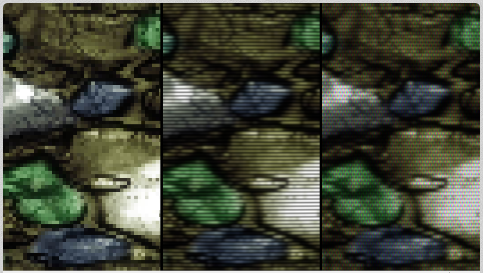

20140819 - Scanlines
Link to the Shadertoy example.

Growing up in the era of the CRT "CGA" Arcade Monitor was just awesome.
Roughly 320x240 or lower resolution at 60 Hz with a low persistence display.
Mix that with stunning pixel art.
One of the core reasons I got into the graphics industry.
Built the above Shadertoy example to show what I personally like in attempting to simulate that old look and feel on modern LCD displays. The human mind is exceptionally good at filling in hidden visual information. The dark gaps between scanlines enable the mind to reconstruct a better image than what is actually there. The right most panel adds a quick attempt at a shadow mask. It is nearly impossible to do a good job simulating that because the LCD cannot get bright enough. The compromise in the shader example is to rotate the mask 90 degrees to reduce chromatic aberration. The mask could definitely be improved, but this is a great place to start...
Feel free to use/modify the shader. Hopefully I'll get lucky and have the option to turn on the vintage scanline look when I play those soon to be released games with awesome pixel art!